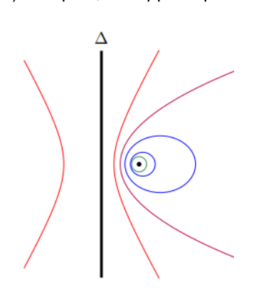
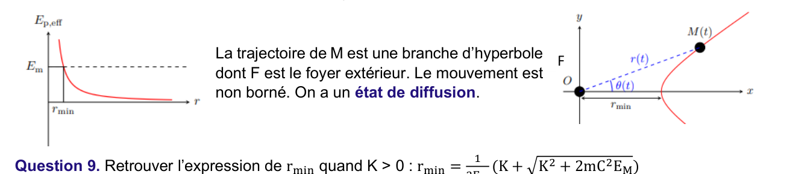
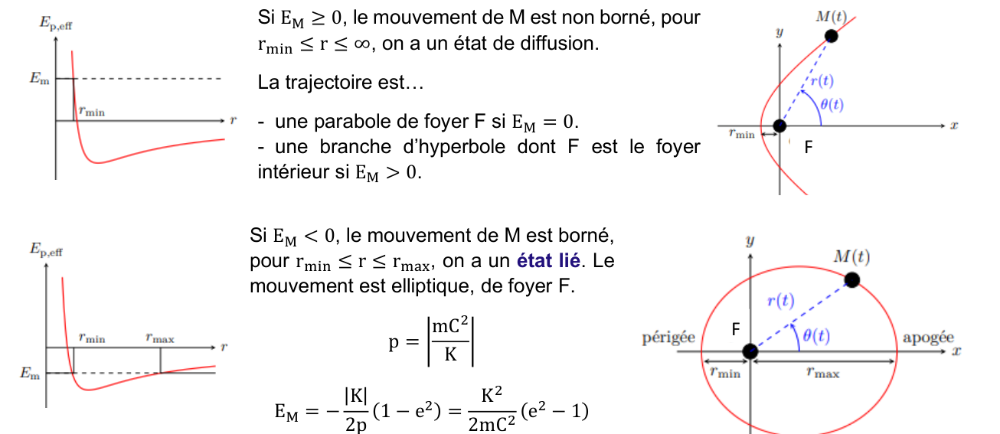
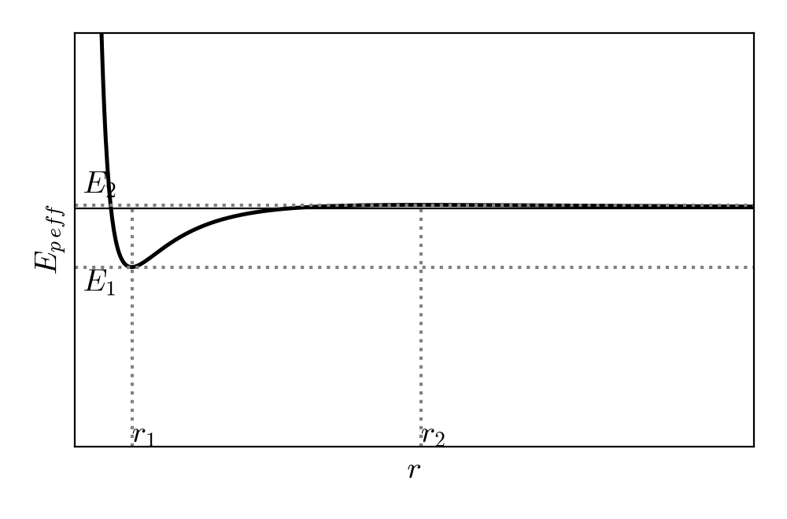

Ch8 — Mouvement à force centrale : lois de conservation, énergie potentielle effective, coniques, satellites
Une force centrale est dirigée vers un point fixe \(O\) : elle n'exerce aucun moment en \(O\). Le moment cinétique se conserve, donc le mouvement est plan et obéit à la loi des aires. Si la force est en plus conservative et en \(1/r^2\) (gravitation, Coulomb), la trajectoire est une conique. Ce chapitre couvre ces résultats, puis leur application aux planètes et aux satellites (géostationnaire, vitesses cosmiques, transfert de Hohmann). AM2 · P2030 · Semestre 3 — D. Courtois, cours daté du 10/11/2026.
1. Résumé de cours
1.1 Force centrale et conservation du moment cinétique
Une force centrale de centre \(O\), appliquée en \(M\), est dirigée selon \(\overrightarrow{OM}\) : \(\vec F=F(r)\,\vec e_r\). Son moment en \(O\) est nul :
\[ \vec{\mathcal M}_O(\vec F)=\overrightarrow{OM}\wedge\vec F=r\vec e_r\wedge F\vec e_r=\vec 0 \]- Le mouvement est plan : il est contenu dans le plan passant par \(O\) et orthogonal à \(\vec L_O\).
- Loi des aires : le rayon vecteur balaie des aires égales pendant des durées égales. Avec \(C=r^2\dot\theta\) (constante des aires) : \(\mathcal A=\tfrac12\,C\,\Delta t\).
1.2 Force centrale conservative et énergie potentielle effective
Une force centrale conservative dérive de \(E_P(r)\) : \(\vec F=-\dfrac{dE_P}{dr}\,\vec e_r\). Elle est attractive si \(F(r)<0\) et répulsive si \(F(r)>0\).
En coordonnées polaires, \(v^2=\dot r^2+r^2\dot\theta^2\) et \(\dot\theta=C/r^2\), donc :
\[ E_M=\tfrac12 m\dot r^2+\underbrace{\frac{mC^2}{2r^2}+E_P(r)}_{E_{Peff}(r)} \]Les seules valeurs accessibles de \(r\) vérifient \(E_{Peff}(r)\le E_M\). La courbe \(E_{Peff}(r)\) donne donc les limites du mouvement radial.
1.3 Champ newtonien : \(F=K/r^2\)
Avec \(E_P(\infty)=0\) : \(E_P=\dfrac Kr\) et \(E_{Peff}=\dfrac{mC^2}{2r^2}+\dfrac Kr\).
- Gravitation : \(K=-Gm_Om_M<0\) (attractive).
- Électrostatique : \(K=\dfrac{q_Oq_M}{4\pi\varepsilon_0}\), \(K<0\) si les charges sont de signes opposés, \(K>0\) sinon.
1.4 Coniques
Une conique de foyer \(F\), de directrice \(\Delta\) et d'excentricité \(e\) est l'ensemble des points tels que \(MF=e\,d(M,\Delta)\). Son équation polaire (origine en \(F\)) est :
\[ r=\frac{p}{1-e\cos\theta} \]| Conique | Excentricité | Domaine de \(r\) |
|---|---|---|
| Cercle | \(e=0\) | \(r=p\) |
| Ellipse | \(0<e<1\) | \(\left[\dfrac p{1+e}\,;\,\dfrac p{1-e}\right]\) |
| Parabole | \(e=1\) | \(\left[\dfrac p2\,;\,+\infty\right[\) |
| Hyperbole | \(e>1\) | \(\left[\dfrac p{1+e}\,;\,+\infty\right[\) (une branche) |

1.5 Trajectoires selon \(E_M\) (champ newtonien)
- \(K>0\) (répulsif) : \(E_M>0\), mouvement non borné, branche d'hyperbole dont \(F\) est le foyer extérieur, état de diffusion.
- \(K<0\), \(E_M>0\) : branche d'hyperbole dont \(F\) est le foyer intérieur (diffusion).
- \(K<0\), \(E_M=0\) : parabole de foyer \(F\) (diffusion, limite).
- \(K<0\), \(E_M<0\) : ellipse de foyer \(F\), état lié, avec \(p=\left|\dfrac{mC^2}K\right|\) et \(E_M=-\dfrac{|K|}{2p}(1-e^2)\).


2. Questions du cours corrigées (Q1 à Q21)
Le TD8 (6 exercices) est corrigé plus bas (section « TD8 »). Ici, chaque question du cours est reprise ci-dessous. Les calculs numériques ont été recalculés en Python, avec les constantes du cours (\(G=6{,}67\cdot10^{-11}\), \(R_T=6378\) km, \(m_T=5{,}976\cdot10^{24}\) kg).
a) Coordonnées cylindriques en fonction des sphériques
Étape 1 : lecture du formulaire
Les coordonnées sphériques du formulaire sont \(x=r\sin\theta\cos\varphi\), \(y=r\sin\theta\sin\varphi\), \(z=r\cos\theta\). \(\theta\) est l'angle avec l'axe \(Oz\).
Étape 2 : cylindriques
En cylindriques, \(\rho\) est la distance à \(Oz\) ; \(\rho=\sqrt{x^2+y^2}\). Avec \(x,y\) ci-dessus :
\[ \rho=r\sin\theta \qquad \varphi_{cyl}=\varphi \qquad z=r\cos\theta \]b) Coordonnées sphériques en fonction des cartésiennes
Étape 1 : rayon
\[ r=\sqrt{x^2+y^2+z^2} \]Étape 2 : angle polaire
\[ \cos\theta=\frac zr \qquad\text{soit}\qquad \theta=\arccos\frac zr \]Étape 3 : azimut
\[ \varphi=\arctan\frac yx \quad\text{(en pratique } \operatorname{atan2}(y,x)\text{, pour avoir le bon quadrant)} \]Réponse
\(\vec L_O=\overrightarrow{OM}\wedge m\vec v=\vec 0\) : les vecteurs \(\overrightarrow{OM}\) et \(\vec v\) sont colinéaires à chaque instant. Le point reste donc sur une droite passant par \(O\) : le mouvement est rectiligne radial, avec \(\dot\theta=0\).
Démonstration
Étape 1 : aire élémentaire
En un temps \(dt\), le rayon vecteur tourne de \(d\theta\) : le triangle balayé a pour aire \(d\mathcal A=\tfrac12 r\cdot r\,d\theta\).
\[ d\mathcal A=\tfrac12 r^2\,d\theta \]Étape 2 : intégration
En divisant par \(dt\) : \(\dfrac{d\mathcal A}{dt}=\tfrac12 r^2\dot\theta=\tfrac12 C\). Donc \(\mathcal A=\tfrac12 C\,\Delta t\).
Étape 3 : lien avec \(L_O\)
Trois exemples et leur énergie potentielle
- Gravitation (newtonienne) : \(\vec F=-\dfrac{Gm_Om_M}{r^2}\vec e_r\), \(E_P=-\dfrac{Gm_Om_M}{r}\). Ici \(F(r)=K/r^2\) avec \(K=-Gm_Om_M\).
- Électrostatique (newtonienne) : \(\vec F=\dfrac{q_Oq_M}{4\pi\varepsilon_0r^2}\vec e_r\), \(E_P=\dfrac{q_Oq_M}{4\pi\varepsilon_0r}\).
- Rappel élastique (non newtonienne) : \(\vec F=-k\,r\,\vec e_r\), \(E_P=\tfrac12kr^2\). Elle est centrale et conservative, mais \(F\) n'est pas en \(1/r^2\).
Démonstration
Étape 1 : théorème de l'énergie cinétique
\[ dE_C=\delta W=\sum\vec F\cdot d\vec{OM} \]Étape 2 : force conservative
Pour une force conservative, \(\delta W=-dE_P\). Donc \(dE_C=-dE_P\), soit \(d(E_C+E_P)=0\).
Identification
- Les courbes en bleu, fermées et emboîtées autour de \(F\) : des cercles et ellipses (\(e<1\)).
- La courbe au centre, qui s'ouvre d'un seul côté : la parabole (\(e=1\)).
- Les courbes en rouge, ouvertes, à deux branches : des hyperboles (\(e>1\)).
Le critère est la valeur de \(e\) : plus \(e\) est proche de 0, plus la conique est proche d'un cercle.
Positions et relations
Étape 1 : placement
\(O\) est le centre de l'ellipse, \(F\) est le foyer, à la distance \(c=OF\). Le périgée (point le plus proche de \(F\)) et l'apogée (le plus loin) sont sur le grand axe.
Étape 2 : distances au foyer
Le périgée est à \(a-c\) du foyer, l'apogée à \(a+c\). Avec \(p=b^2/a\), \(e=c/a\) :
\[ r_{min}=\frac p{1+e}=\frac{b^2}{a+c}=a-c \qquad r_{max}=\frac p{1-e}=\frac{b^2}{a-c}=a+c \]Étape 3 : inversion
\[ a=\frac{r_{min}+r_{max}}2 \qquad c=\frac{r_{max}-r_{min}}2 \qquad e=\frac ca \]Justification
Étape 1 : limites
- En \(r\to0\), le terme \(\dfrac{mC^2}{2r^2}\) domine : \(E_{Peff}\to+\infty\).
- En \(r\to\infty\), \(E_{Peff}\to0\).
Étape 2 : cas \(K>0\)
Les deux termes sont positifs : \(E_{Peff}\) décroît de \(+\infty\) vers 0 sans minimum. Donc \(E_M\ge E_{Peff}(r)>0\) pour \(r\ge r_{min}\), mouvement non borné.
Étape 3 : cas \(K<0\)
Le terme \(K/r\) est négatif et tend vers 0 : \(E_{Peff}\) passe par un minimum négatif, puis remonte vers 0 par valeurs négatives. Selon la valeur de \(E_M\), on obtient un état lié (deux points de rebroussement \(r_{min}\), \(r_{max}\)) ou un état de diffusion.
Démonstration
Étape 1 : point de rebroussement
En \(r_{min}\), \(\dot r=0\), donc \(E_M=E_{Peff}(r_{min})\) :
\[ E_M=\frac{mC^2}{2r_{min}^2}+\frac K{r_{min}} \]Étape 2 : équation du second degré
En multipliant par \(r_{min}^2\) : \(E_M\,r_{min}^2-K\,r_{min}-\dfrac{mC^2}2=0\). Le discriminant est \(\Delta=K^2+2mC^2E_M\).
Étape 3 : racine positive
\[ r_{min}=\frac{K+\sqrt{K^2+2mC^2E_M}}{2E_M} \]Démonstration
Étape 1 : même équation
Les deux points de rebroussement vérifient \(E_M\,r^2-K\,r-\dfrac{mC^2}2=0\). Avec \(K=-|K|\) et \(E_M=-|E_M|\), on pose \(D=K^2+2mC^2E_M\), qui est positif pour un état lié.
Étape 2 : deux racines
\[ r_{min}=\frac{|K|-\sqrt D}{2|E_M|} \qquad r_{max}=\frac{|K|+\sqrt D}{2|E_M|} \]Étape 3 : vérification de la forme elliptique
On trouve \(a=\dfrac{r_{min}+r_{max}}2=\dfrac{|K|}{2|E_M|}\), \(c=\dfrac{r_{max}-r_{min}}2=\dfrac{\sqrt D}{2|E_M|}\), donc \(e=\dfrac{c}{a}=\dfrac{\sqrt D}{|K|}=\sqrt{1+\dfrac{2mC^2E_M}{K^2}}\). Et \(p=\dfrac{mC^2}{|K|}\), ce qui redonne \(E_M=-\dfrac{|K|}{2p}(1-e^2)\).
Condition
Étape 1 : \(r_{min}=r_{max}\)
Cela impose \(\sqrt D=0\), soit \(e=0\).
Étape 2 : énergie et rayon
\[ E_M=-\frac{K^2}{2mC^2} \qquad R=p=\frac{mC^2}{|K|} \]Étape 3 : vitesse
Pour un cercle, \(v=C/R\), donc \(C^2=|K|R/m\) : un mouvement circulaire est possible à chaque rayon, avec une énergie \(E_M\) correspondante.
Réponse
Les planètes décrivent des ellipses dont le Soleil est un foyer, avec un mouvement borné. C'est l'état lié : \(E_M<0\).
Données : \(r_{périhélie}=147{,}1\cdot10^6\) km, \(r_{aphélie}=152{,}1\cdot10^6\) km
Étape 1 : demi-grand axe
\[ a=\frac{147{,}1+152{,}1}{2}\cdot10^6=1{,}496\cdot10^8\ \text{km} \]Étape 2 : demi-distance focale et excentricité
\[ c=\frac{152{,}1-147{,}1}{2}\cdot10^6=2{,}5\cdot10^6\ \text{km} \qquad e=\frac ca=\frac{2{,}5}{149{,}6}\approx1{,}671\cdot10^{-2} \]Étape 3 : demi-petit axe et paramètre
\[ b=a\sqrt{1-e^2}\approx1{,}496\cdot10^8\ \text{km}\ \ (\approx149{,}58\cdot10^6\ \text{km}) \qquad p=\frac{b^2}{a}\approx1{,}496\cdot10^8\ \text{km} \]Démonstration
Étape 1 : PFD sur un cercle
La seule force est la gravitation, centripète. Avec \(a=v^2/R\) :
\[ \frac{Gm_Sm_P}{R^2}=m_P\frac{v^2}{R} \quad\Longrightarrow\quad v=\sqrt{\frac{Gm_S}{R}} \]Étape 2 : période
La vitesse est constante (mouvement uniforme). \(T=\dfrac{2\pi R}{v}\), donc \(T^2=\dfrac{4\pi^2R^2}{v^2}=\dfrac{4\pi^2R^3}{Gm_S}\).
Démonstration
\[ E_M=\tfrac12m_Pv^2-\frac{Gm_Sm_P}{R}=\frac{Gm_Sm_P}{2R}-\frac{Gm_Sm_P}{R}=-\frac{Gm_Sm_P}{2R} \]Données : \(T=86\,164\) s, \(G=6{,}67\cdot10^{-11}\), \(m_T=5{,}976\cdot10^{24}\) kg, \(R_T=6378\) km
Étape 1 : rayon de l'orbite (troisième loi, \(Gm_T\))
\[ R^3=\frac{Gm_TT^2}{4\pi^2}\quad\Longrightarrow\quad R\approx4{,}216\cdot10^{7}\ \text{m}\approx42\,164\ \text{km} \]Étape 2 : altitude
\[ h=R-R_T=42\,164-6\,378\approx35\,786\ \text{km} \]Étape 3 : vitesse
\[ v=\frac{2\pi R}{T}=\sqrt{\frac{Gm_T}{R}}\approx3{,}07\ \text{km·s}^{-1} \]Valeurs (\(v=\sqrt{Gm_T/r}\), \(r\) = distance au centre de la Terre)
- Orbite basse \(h=200\) km : \(r=6578\) km, \(v\approx7{,}78\) km/s.
- Première vitesse cosmique \(h=0\) : \(v_1=\sqrt{Gm_T/R_T}\approx7{,}91\) km/s.
- Géostationnaire : \(v\approx3{,}07\) km/s.
- Lune \(d_{TL}=384\,400\) km : \(v\approx1{,}02\) km/s.
Réponse
Étape 1 : seuil
L'état de diffusion correspond à \(E_M\ge0\). La valeur minimale est donc \(E_M=0\).
Étape 2 : vitesse de libération
\[ \tfrac12mv_{lib}^2-\frac{Gm_Tm}{R_T}=0 \quad\Longrightarrow\quad v_{lib}=\sqrt{\frac{2Gm_T}{R_T}}=\sqrt2\,v_1\approx11{,}18\ \text{km·s}^{-1} \]Données : \(r_A=R_T+200\) km \(=6578\) km (périgée), \(r_B=R_T+35\,786\) km \(=42\,164\) km (apogée)
Étape 1 : demi-grand axe
\[ a=\frac{r_A+r_B}2=\frac{6578+42164}2\approx24\,371\ \text{km} \]Étape 2 : excentricité
\[ e=\frac{r_B-r_A}{r_B+r_A}=\frac{35586}{48742}\approx0{,}730 \]Étape 3 : demi-petit axe
\[ b=a\sqrt{1-e^2}\approx24\,371\times0{,}683\approx16\,654\ \text{km} \]Réponse
Étape 1 : période de l'ellipse (troisième loi de Kepler)
\[ T_{ell}=2\pi\sqrt{\frac{a^3}{Gm_T}}\approx3{,}786\cdot10^{4}\ \text{s} \]Étape 2 : demi-période (du périgée à l'apogée)
\[ \Delta t=\frac{T_{ell}}2\approx1{,}893\cdot10^{4}\ \text{s}\approx5\ \text{h}\ 16\ \text{min} \]Vitesses sur le cercle (\(v=\sqrt{Gm_T/r}\)) et sur l'ellipse (\(v^2=Gm_T(2/r-1/a)\), vis-viva)
- Cercle bas : \(v_{AC}=\sqrt{Gm_T/r_A}\approx7{,}78\) km/s ; cercle géostationnaire : \(v_{BC}\approx3{,}07\) km/s.
- Ellipse de transfert : \(v_{AE}\approx10{,}24\) km/s ; \(v_{BE}\approx1{,}60\) km/s.
Étape 1 : impulsion en A (orbite basse vers transfert)
\[ \Delta v_1=v_{AE}-v_{AC}\approx10{,}24-7{,}78=2{,}46\ \text{km·s}^{-1} \]Étape 2 : impulsion en B (transfert vers géostationnaire)
\[ \Delta v_2=v_{BC}-v_{BE}\approx3{,}07-1{,}60=1{,}47\ \text{km·s}^{-1} \]TD8 · Les outils communs aux six exercices
TD8 · Exercice 1 — Nucléon dans un potentiel de Yukawa
Nucléon \(M\) de masse \(m\), force centrale dérivant de \(E_p(r)=\dfrac{K}{r}e^{-r/a}\) (\(a>0\)). 1) dimensions de \(a\) et \(K\) ; 2) force, signe de \(K\) ; 3) plan de la trajectoire ; 4) \(C=r^2\dot\theta\) ; 5) \(E_{p\,\mathrm{eff}}\) ; 6) état lié ou de diffusion ; 7) portées \(a=\dfrac{h}{2\pi m_bc}\) ; 8) cas gravitationnel et électromagnétique ; 9) signes de \(K\) et \(K'\).

1) Dimensions de \(a\) et \(K\)
Étape 1 : \(a\).
L'exponentielle \(e^{-r/a}\) a un argument sans dimension, donc \(a\) a la dimension d'une longueur.
Étape 2 : \(K\).
\(K\,e^{-r/a}/r\) est une énergie, donc \(K=E_p\,r\).
2) Force et signe de \(K\)
Étape 1 : on dérive le produit \(K\,r^{-1}e^{-r/a}\).
\[ \frac{dE_p}{dr}=K\left(-\frac{1}{r^2}-\frac{1}{ar}\right)e^{-r/a} \] \[ \vec F=K\,e^{-r/a}\left(\frac{1}{r^2}+\frac{1}{ar}\right)\vec e_r \]Étape 2 : signe. Le facteur entre parenthèses est positif, donc le signe de \(F_r\) est celui de \(K\). Une force attractive est dirigée vers \(O\), soit \(F_r<0\).
3) Plan de la trajectoire
Étape 1 : le théorème du moment cinétique en \(O\).
\[ \frac{d\vec L_O}{dt}=\overrightarrow{OM}\wedge\vec F=r\vec e_r\wedge F\vec e_r=\vec 0 \]Étape 2 : \(\vec L_O=\overrightarrow{OM}\wedge m\vec v\) est constant et orthogonal à \(\overrightarrow{OM}\) à tout instant.
4) Constante \(C=r^2\dot\theta\)
Étape 1 : dans le plan \(Oxy\), avec \(\vec v=\dot r\vec e_r+r\dot\theta\vec e_\theta\), le moment cinétique vaut
\[ \vec L_O=m\,r\vec e_r\wedge(\dot r\vec e_r+r\dot\theta\vec e_\theta)=m\,r^2\dot\theta\,\vec e_z \]Il est constant, donc \(C=r^2\dot\theta\) est constante.
Étape 2 : valeur initiale. À \(t=0\), \(\theta=0\), \(r=r_0\), \(\vec v_0=v_1\vec e_x+v_2\vec e_y\). La composante orthoradiale de \(\vec v_0\) est \(r_0\dot\theta_0=v_2\) (car \(\vec e_\theta=\vec e_y\) pour \(\theta=0\)).
5) Énergie mécanique et \(E_{p\,\mathrm{eff}}\)
Étape 1 : \(E_m=\tfrac12m(\dot r^2+r^2\dot\theta^2)+E_p(r)\). On remplace \(\dot\theta=C/r^2\).
\[ E_m=\tfrac12m\dot r^2+\underbrace{\frac{mC^2}{2r^2}+\frac{K}{r}e^{-r/a}}_{E_{p\,\mathrm{eff}}(r)} \]Étape 2 : conservation. La seule force est conservative (dérive de \(E_p\)), donc \(E_m\) est constante.
6) État lié ou état de diffusion
Étape 1 : lecture du graphe. \(E_{p\,\mathrm{eff}}\) présente un puits de minimum \(E_1<0\) en \(r_1\), puis une barrière de maximum \(E_2>0\) en \(r_2\), puis tend vers \(0^+\) quand \(r\to\infty\).
Étape 2 : condition d'accessibilité \(E_m\ge E_{p\,\mathrm{eff}}(r)\).
- \(E_1\le E_m<0\) : \(r\) reste entre deux rayons d'arrêt, c'est un état lié.
- \(0\le E_m<E_2\) : si \(r_0<r_2\), le nucléon reste piégé dans le puits (état lié) ; si \(r_0>r_2\), il est dans la zone externe (diffusion).
- \(E_m>E_2\) : aucun obstacle, \(r\) peut tendre vers l'infini : diffusion.
7) Portée des quatre interactions
Étape 1 : pion (\(m_b=2{,}4\cdot10^{-28}\) kg).
\[ a=\frac{6{,}6\cdot10^{-34}}{2\pi\times2{,}4\cdot10^{-28}\times3{,}0\cdot10^{8}}\approx1{,}5\cdot10^{-15}\ \mathrm{m} \]Étape 2 : boson \(W^\pm\) (\(m_b=1{,}4\cdot10^{-25}\) kg).
\[ a=\frac{6{,}6\cdot10^{-34}}{2\pi\times1{,}4\cdot10^{-25}\times3{,}0\cdot10^{8}}\approx2{,}5\cdot10^{-18}\ \mathrm{m} \]Étape 3 : photon et graviton, \(m_b=0\), donc \(a\to+\infty\).
8) Interactions gravitationnelle et électromagnétique
Étape 1 : avec \(a\to\infty\), \(e^{-r/a}\to1\) et \(\dfrac{1}{ar}\to0\).
\[ \vec F=K\left(\frac{1}{r^2}+\frac{1}{ar}\right)e^{-r/a}\vec e_r\;\longrightarrow\;\frac{K}{r^2}\vec e_r \]9) Signes de \(K\) et \(K'\) pour un proton dans un noyau
Étape 1 : l'interaction électromagnétique entre deux protons (charges de même signe) est répulsive, donc \(K>0\).
Étape 2 : pour que le noyau soit lié, l'interaction forte doit être attractive, donc \(K'<0\), et elle doit l'emporter sur la répulsion coulombienne à courte distance.
TD8 · Exercice 2 — Force de rappel isotrope
\(M\) de masse \(m\), force centrale dérivant de \(E_p(r)=\tfrac12kr^2\) (\(k>0\)). Conditions initiales : \(x(0)=a>0\), \(y(0)=z(0)=0\), \(\dot x(0)=\dot z(0)=0\), \(\dot y(0)=v_0>0\).
1) Force \(\vec F\)
Étape 1 : \(\vec F=-\dfrac{dE_p}{dr}\vec e_r=-kr\,\vec e_r\).
2) Moment cinétique et plan du mouvement
Étape 1 : \(\dfrac{d\vec L_O}{dt}=\overrightarrow{OM}\wedge\vec F=-k\,\overrightarrow{OM}\wedge\overrightarrow{OM}=\vec0\).
Étape 2 : valeur à \(t=0\), avec \(\overrightarrow{OM_0}=a\vec e_x\) et \(\vec v_0=v_0\vec e_y\).
\[ \vec L_O=m\,a\vec e_x\wedge v_0\vec e_y=m\,a\,v_0\,\vec e_z \]3) Énergie mécanique
Étape 1 : \(\vec F\) dérive d'une énergie potentielle, donc \(E_M\) se conserve. On la calcule à \(t=0\) (\(r=a\), \(v=v_0\)).
4) \(r^2\dot\theta\) et équation en \(r\)
Étape 1 : \(L_O=mr^2\dot\theta=mav_0\), donc \(r^2\dot\theta=a\,v_0\).
Étape 2 : on reporte \(\dot\theta=\dfrac{av_0}{r^2}\) dans \(E_M\).
\[ \tfrac12m\dot r^2+\frac{m\,a^2v_0^2}{2r^2}+\tfrac12kr^2=\tfrac12mv_0^2+\tfrac12ka^2 \]5) Énergie potentielle effective et cercles limites
Étape 1 : \(E_{p\,\mathrm{eff}}(r)=\dfrac{m\,a^2v_0^2}{2r^2}+\tfrac12kr^2\), qui tend vers \(+\infty\) en \(0\) et en \(\infty\), avec un minimum : le mouvement est borné.
Étape 2 : rayons d'arrêt, \(\dot r=0\), soit \(E_{p\,\mathrm{eff}}(r)=E_M\). On multiplie par \(2r^2\) :
\[ k\,r^4-(mv_0^2+ka^2)\,r^2+m\,a^2v_0^2=0 \]Étape 3 : factorisation. On vérifie que \((kr^2-mv_0^2)(r^2-a^2)\) redonne ce polynôme : \(kr^4-ka^2r^2-mv_0^2r^2+mv_0^2a^2\). Les racines sont
\[ r^2=a^2\qquad\text{et}\qquad r^2=\frac{m\,v_0^2}{k} \]6) Équations horaires et nature de la trajectoire
Étape 1 : PFD, \(m\ddot{\overrightarrow{OM}}=-k\,\overrightarrow{OM}\). On pose \(\omega=\sqrt{k/m}\).
\[ \ddot{\overrightarrow{OM}}+\omega^2\overrightarrow{OM}=\vec0 \]Étape 2 : solution vectorielle \(\overrightarrow{OM}=\vec A\cos\omega t+\vec B\sin\omega t\). Conditions initiales : \(\vec A=\overrightarrow{OM_0}=a\vec e_x\) et \(\omega\vec B=\vec v_0=v_0\vec e_y\).
Étape 3 : nature. \(\dfrac{x^2}{a^2}+\dfrac{y^2}{(v_0/\omega)^2}=1\).
TD8 · Exercice 3 — Expérience de Rutherford
Particule alpha (masse \(m\), charge \(2e\)) venant de l'infini avec la vitesse \(-v_0\vec e_x\), de paramètre d'impact \(b\), sur un noyau fixe en \(O\) de numéro atomique \(Z\). Trajectoire : branche d'hyperbole. Donnée : \(\tan\dfrac D2=\dfrac{K}{mbv_0^2}\) ; \(\varepsilon_0=8{,}9\cdot10^{-12}\), \(e=1{,}6\cdot10^{-19}\) C, \(m=6{,}6\cdot10^{-27}\) kg, \(v_0=2{,}0\cdot10^{7}\) m·s\(^{-1}\), \(Z=79\).

1) Force et énergie potentielle
Étape 1 : \(q_1=2e\) et \(q_2=Ze\).
\[ \vec F=\frac{K}{r^2}\vec e_r\quad\text{avec}\quad K=\frac{2Ze^2}{4\pi\varepsilon_0}>0 \]Étape 2 : \(E_p=-\displaystyle\int F\,dr\) avec \(E_p(\infty)=0\).
2) Énergie mécanique
Étape 1 : force conservative, donc \(E_m\) constante. Évaluation à l'infini : \(E_p=0\), \(v=v_0\).
3) Moment cinétique
Étape 1 : force centrale, donc \(\vec L_O\) est constant. Il vaut \(\vec L_O=mr^2\dot\theta\,\vec e_z\).
Étape 2 : valeur initiale. À l'infini, la vitesse est \(v_0\) parallèle à l'axe \(Ox\), et la distance de \(O\) à cette droite est \(b\) : \(\|\overrightarrow{OM}\wedge m\vec v\|=m\,v_0\,b\).
4) \(E_p^*(r)\)
Étape 1 : \(E_m=\tfrac12m\dot r^2+\tfrac12mr^2\dot\theta^2+\dfrac Kr\), avec \(\dot\theta=\dfrac{v_0b}{r^2}\).
5) Distance minimale d'approche
Étape 1 : en \(S\), \(\dot r=0\), donc \(E_m=E_p^*(r_{min})\).
\[ \tfrac12mv_0^2=\frac{mv_0^2b^2}{2r_{min}^2}+\frac{K}{r_{min}} \]Étape 2 : on multiplie par \(\dfrac{2r_{min}^2}{mv_0^2}\) pour obtenir une équation du second degré.
\[ r_{min}^2-\frac{2K}{mv_0^2}\,r_{min}-b^2=0 \]Étape 3 : on garde la racine positive (\(\Delta'=\left(\frac{K}{mv_0^2}\right)^2+b^2\)).
6) Applications numériques
Étape 1 : la constante \(K\).
\[ K=\frac{2\times79\times(1{,}6\cdot10^{-19})^2}{4\pi\times8{,}9\cdot10^{-12}}\approx3{,}6\cdot10^{-26}\ \mathrm{J\cdot m} \]Étape 2 : \(\dfrac{K}{mv_0^2}\), avec \(mv_0^2=6{,}6\cdot10^{-27}\times(2{,}0\cdot10^{7})^2=2{,}64\cdot10^{-12}\) J.
\[ \frac{K}{mv_0^2}\approx1{,}37\cdot10^{-14}\ \mathrm{m} \]Étape 3 : \(D=60^\circ\). \(b=\dfrac{K}{mv_0^2\tan30^\circ}\).
\[ b=\frac{1{,}37\cdot10^{-14}}{0{,}577}\approx2{,}4\cdot10^{-14}\ \mathrm m,\qquad r_{min}=1{,}37\cdot10^{-14}+\sqrt{(1{,}37\cdot10^{-14})^2+(2{,}37\cdot10^{-14})^2}\approx4{,}1\cdot10^{-14}\ \mathrm m \]Étape 4 : \(D=180^\circ\). \(\tan90^\circ\to\infty\), donc \(b=0\) : choc frontal. Alors \(r_{min}=\dfrac{2K}{mv_0^2}\).
\[ r_{min}\approx2{,}7\cdot10^{-14}\ \mathrm m \]TD8 · Exercice 4 — Satellite circulaire
Satellite de masse \(m\) sur une orbite circulaire de rayon \(r=R+h\). \(G=6{,}67\cdot10^{-11}\) SI, \(M=6{,}0\cdot10^{24}\) kg, \(R=6370\) km.
1) Vitesse
Étape 1 : PFD avec \(\vec F=-\dfrac{GMm}{r^2}\vec e_r\) et \(r=\mathrm{cte}\).
\[ -mr\dot\theta^2=-\frac{GMm}{r^2}\quad(\text{sur }\vec e_r),\qquad mr\ddot\theta=0\quad(\text{sur }\vec e_\theta) \]Étape 2 : \(\ddot\theta=0\), donc \(\dot\theta\) et \(v=r\dot\theta\) sont constants. Sur \(\vec e_r\), \(\dfrac{v^2}{r}=\dfrac{GM}{r^2}\).
2) Période et troisième loi de Kepler
Étape 1 : \(T=\dfrac{2\pi r}{v}=2\pi r\sqrt{\dfrac{r}{GM}}\).
\[ \frac{T^2}{r^3}=\frac{4\pi^2}{GM} \]3) Énergies
Étape 1 : \(E_c=\tfrac12mv^2=\dfrac{GMm}{2r}\).
Étape 2 : \(E_p=-\dfrac{GMm}{r}\), donc \(E_m=E_c+E_p=-\dfrac{GMm}{2r}\).
4) Satellite géostationnaire
Étape 1 : immobile par rapport à la Terre, il tourne dans le plan équatorial avec la période de rotation de la Terre, le jour sidéral \(T=86\,164\) s (≈ 24 h).
Étape 2 : on inverse la 3ᵉ loi.
\[ r=\left(\frac{GMT^2}{4\pi^2}\right)^{1/3}=\left(\frac{6{,}67\cdot10^{-11}\times6{,}0\cdot10^{24}\times86164^2}{4\pi^2}\right)^{1/3}\approx4{,}22\cdot10^{7}\ \mathrm m \]5) Lancement
Étape 1 : a) avant le lancement, le satellite est immobile sur Terre à la latitude \(\lambda\) : il tourne à \(\Omega=\dfrac{2\pi}{T}\) sur un cercle de rayon \(R\cos\lambda\). Sa vitesse est \(\Omega R\cos\lambda\).
Étape 2 : b) la fusée fournit \(W=E_{m,f}-E_{m,i}\) (théorème de l'énergie mécanique), avec \(E_{m,f}=-\dfrac{GMm}{2r}\).
Étape 3 : c) \(h\ll R\), donc \(W(\lambda)\approx\dfrac{GMm}{2R}-\tfrac12m\Omega^2R^2\cos^2\lambda\). Par kilogramme : \(\dfrac{GM}{2R}=3{,}14\cdot10^{7}\) J·kg\(^{-1}\) et \(\tfrac12\Omega^2R^2=1{,}08\cdot10^{5}\) J·kg\(^{-1}\).
\[ W(0^\circ)\approx3{,}130\cdot10^{7},\qquad W(55^\circ)\approx3{,}138\cdot10^{7}\ \mathrm{J\cdot kg^{-1}} \] \[ \frac{W(55^\circ)-W(0^\circ)}{W(55^\circ)}\approx0{,}23\ \% \]TD8 · Exercice 5 — Trou noir
Point \(P\) de masse \(m\) près d'un astre sphérique de centre \(O\), de masse \(M\) et de rayon \(R\), dans le référentiel astrocentrique supposé galiléen.
1) Force, énergie potentielle, énergie mécanique
Étape 1 : loi de gravitation de Newton.
\[ \vec F=-\frac{GMm}{r^2}\vec e_r,\qquad E_p(r)=-\frac{GMm}{r}\ (E_p(\infty)=0),\qquad E_m=\tfrac12mv^2-\frac{GMm}{r} \]2) Mouvement plan et \(C=r^2\dot\theta\)
Étape 1 : \(\vec F\) centrale donc \(\dfrac{d\vec L_O}{dt}=\vec0\) : \(\vec L_O\) constant, \(\overrightarrow{OP}\perp\vec L_O\), le mouvement est plan.
Étape 2 : en polaires, \(\vec L_O=mr^2\dot\theta\vec e_z\) constant.
3) \(E_{p\,\mathrm{eff}}\)
Étape 1 : \(v^2=\dot r^2+r^2\dot\theta^2=\dot r^2+\dfrac{C^2}{r^2}\).
4) Courbe et états de diffusion
Étape 1 : allure. \(E_{p\,\mathrm{eff}}\to+\infty\) quand \(r\to0\) (terme en \(1/r^2\) dominant), puis passe par un minimum négatif en \(r=\dfrac{C^2}{GM}\) (valeur \(-\dfrac{G^2M^2m}{2C^2}\)), puis tend vers \(0^-\) quand \(r\to\infty\).
Étape 2 : raisonnement graphique. \(P\) ne peut aller qu'aux \(r\) vérifiant \(E_m\ge E_{p\,\mathrm{eff}}\).
- \(E_m<0\) : \(r\) est borné, état lié (ellipse).
- \(E_m\ge0\) : aucune borne supérieure en \(r\), \(P\) peut s'éloigner à l'infini.
5) Vitesse de libération
Étape 1 : on cherche la vitesse minimale en \(r=R\). Le cas le plus favorable est \(E_m=0\).
\[ \tfrac12mv_{lib}^2-\frac{GMm}{R}=0 \]6) Rayon d'un trou noir
Étape 1 : condition \(v_{lib}>c\).
\[ \sqrt{\frac{2GM}{R}}>c\;\Longleftrightarrow\;R<\frac{2GM}{c^2} \]7) Applications numériques
- Soleil (\(M=2{,}0\cdot10^{30}\) kg) : \(R_S=\dfrac{2\times6{,}67\cdot10^{-11}\times2{,}0\cdot10^{30}}{(3{,}0\cdot10^{8})^2}\approx3{,}0\cdot10^{3}\) m, soit environ 3 km.
- Terre (\(M=6{,}0\cdot10^{24}\) kg) : \(R_S\approx9\cdot10^{-3}\) m, soit environ 9 mm.
8) Réserves sur l'emploi de la loi de Newton
- La mécanique de Newton suppose \(v\ll c\) : elle n'est plus valable pour des vitesses de l'ordre de \(c\).
- La lumière n'a pas de masse : l'énergie cinétique \(\tfrac12mv^2\) n'a pas de sens pour un photon ; il faut la relativité (restreinte et générale).
- La gravitation est un effet de courbure de l'espace-temps (relativité générale) ; la loi en \(1/r^2\) n'est qu'une approximation des champs faibles.
- Le résultat \(R_S=2GM/c^2\) coïncide avec celui de la relativité générale, par chance et non par rigueur.
TD8 · Exercice 6 — Alerte à l'astéroïde
Astéroïde de masse \(m\), très loin de la Terre avec la vitesse \(\vec v_0\) et le paramètre d'impact \(b\). Il est dévié selon une hyperbole ; le périgée \(P\) est le point le plus proche. \(v_0=2{,}0\) km·s\(^{-1}\), \(b=140\,000\) km.

1) Grandeurs conservées et équations
Étape 1 : la gravitation est une force centrale conservative, donc le moment cinétique \(\vec L_O\) et l'énergie mécanique \(E_m\) se conservent.
Étape 2 : en \(M_\infty\), la vitesse est \(v_0\), la distance à la droite support est \(b\) et \(E_p=0\). En \(P\), la vitesse \(\vec v_P\) est orthoradiale (perpendiculaire à \(\overrightarrow{OP}\)) car \(\dot r=0\).
\[ mbv_0=m\,r_{min}\,v_P \quad(\text{moment cinétique}) \] \[ \tfrac12mv_0^2=\tfrac12mv_P^2-\frac{GMm}{r_{min}}\quad(\text{énergie mécanique}) \]2) Distance minimale d'approche
Étape 1 : on tire \(v_P=\dfrac{bv_0}{r_{min}}\) de la première équation et on le reporte dans la seconde.
\[ \tfrac12v_0^2=\frac{b^2v_0^2}{2r_{min}^2}-\frac{GM}{r_{min}} \]Étape 2 : on multiplie par \(\dfrac{2r_{min}^2}{v_0^2}\).
\[ r_{min}^2+\frac{2GM}{v_0^2}\,r_{min}-b^2=0 \]Étape 3 : racine positive.
3) L'astéroïde s'écrase-t-il ?
Étape 1 : \(\dfrac{GM}{v_0^2}=\dfrac{6{,}67\cdot10^{-11}\times6{,}0\cdot10^{24}}{(2{,}0\cdot10^{3})^2}\approx1{,}0\cdot10^{8}\) m.
Étape 2 : \(b=1{,}4\cdot10^{8}\) m.
\[ r_{min}=-1{,}0\cdot10^{8}+\sqrt{(1{,}0\cdot10^{8})^2+(1{,}4\cdot10^{8})^2}\approx7{,}2\cdot10^{7}\ \mathrm m \]📂 Documents donnés
Sources de ce chapitre (cours et formulaire fournis par D. Courtois). Cliquez pour ouvrir le PDF dans le site.
- PDFTD8 — Systèmes tournants (retapé)
- PDFCours8 — Mouvement à force centraleCours↗
- PDFFormulaire des coordonnées (Ch8)Formulaire↗
Cursus AM2 · P2030 · Semestre 3 · Partie Systèmes tournants, D. Courtois. Ce chapitre fait suite au Ch7 — Moment cinétique.